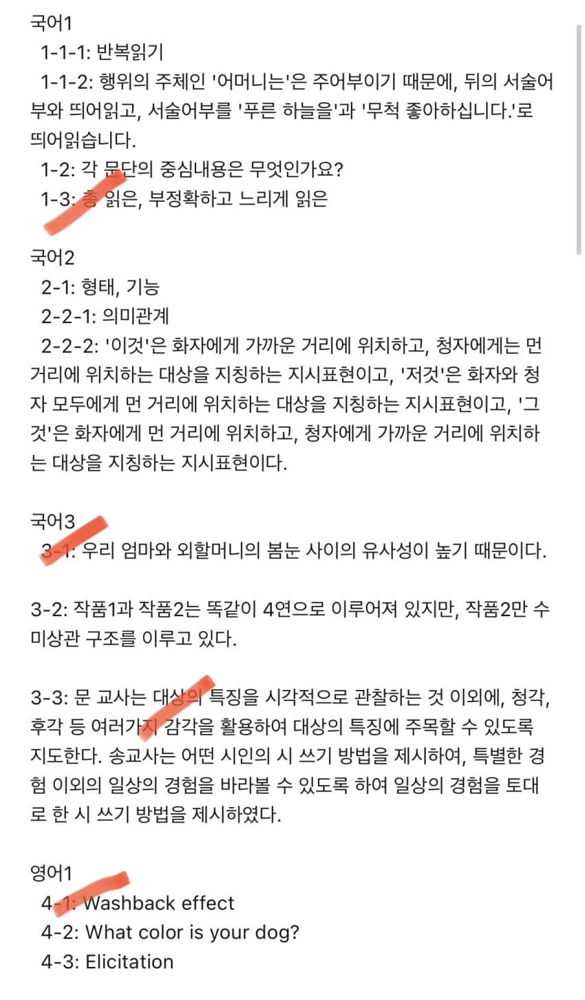
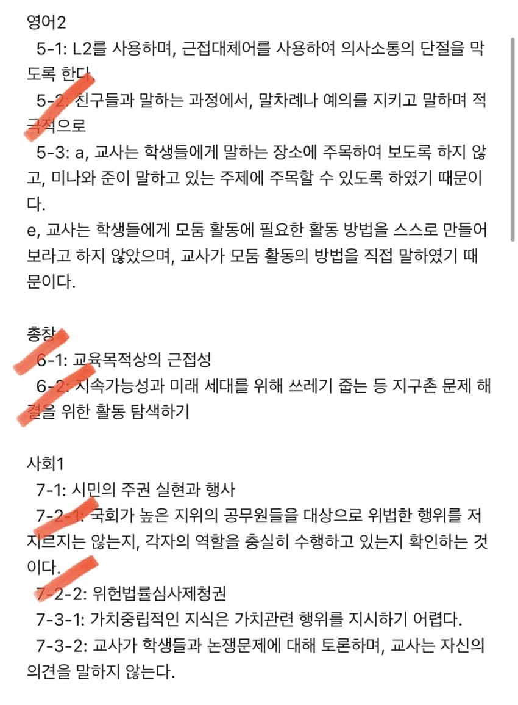
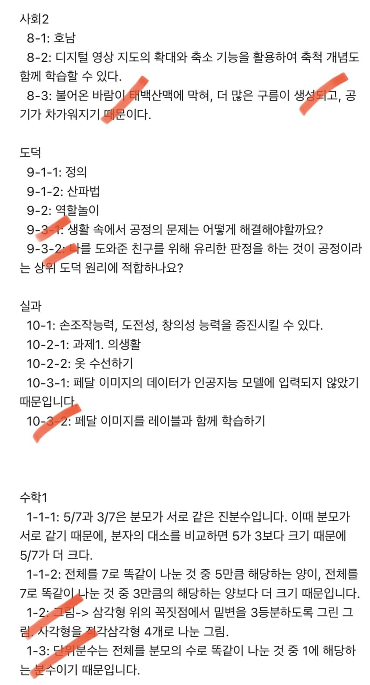
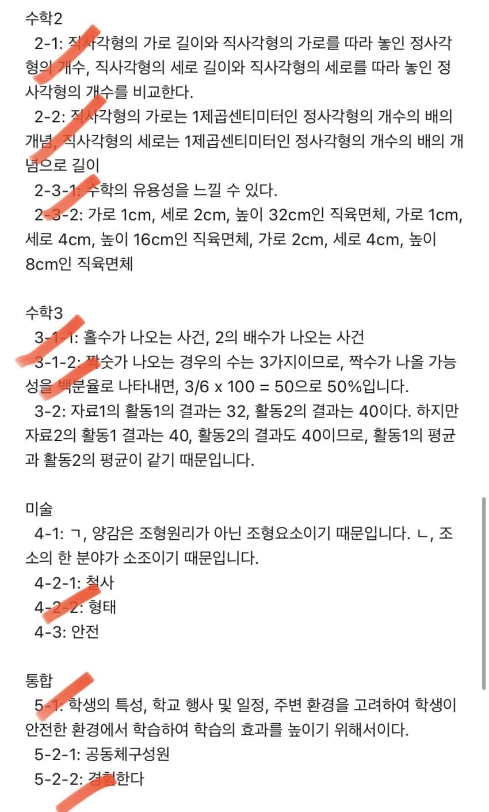
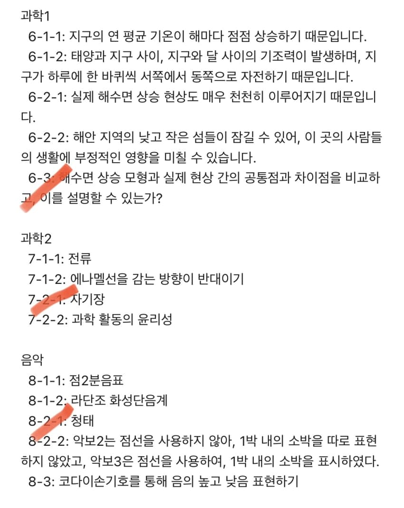
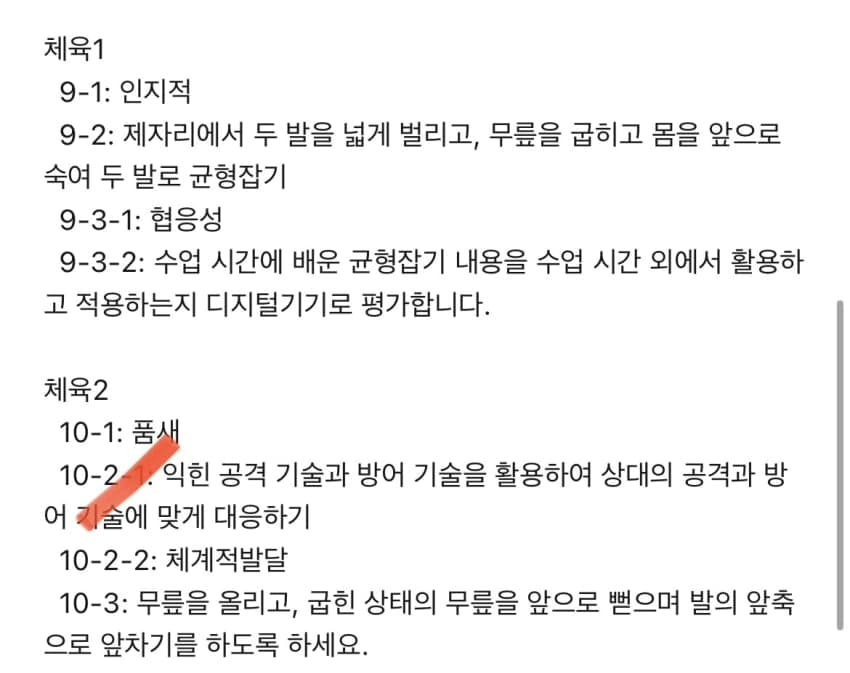

물채임? A 25 B 27 나오는데- dc official App출처: 초등교사 갤러리 [원본 보기]
댓글
수집 당시 댓글 45개
선생님1 · 11.10 00:34:23
· 선생님 · 11.10 00:35:01
선생님2 · 11.10 00:35:20
· 선생님 · 11.10 00:36:47
선생님3 · 11.10 00:36:12
· 선생님 · 11.10 00:37:17
ㅇㅇ · 11.10 00:37:26
· 선생님 · 11.10 00:38:15
· ㅇㅇ · 11.10 00:38:54
· 선생님 · 11.10 00:40:33
선생님4 · 11.10 00:39:18
선생님5 · 11.10 00:40:21
· 선생님 · 11.10 00:41:36
선생님6 · 11.10 00:40:21
· 선생님 · 11.10 00:41:15
ㅇㅇ · 11.10 00:41:18
· 선생님8 · 11.10 00:44:58
· ㅇㅇ · 11.10 00:47:00
· ㅇㅇ · 11.10 00:48:16
선생님7 · 11.10 00:43:04
· 선생님8 · 11.10 00:45:17
선생님9 · 11.10 01:05:30
· 선생님9 · 11.10 01:09:03
선생님9 · 11.10 01:10:37
· ㅇㅇ · 11.10 01:12:50
· 선생님9 · 11.10 01:13:29
· ㅇㅇ · 11.10 01:15:22
· 선생님9 · 11.10 01:17:16
선생님10 · 11.10 02:17:34
· ㅇㅇ · 11.10 02:18:51
· ㅇㅇ · 11.10 02:19:55
· 선생님10 · 11.10 02:43:36
· ㅇㅇ · 11.10 02:44:23
· 선생님10 · 11.10 02:47:19
선생님9 · 11.10 02:56:29
땨뗘(봇) · 11.10 10:01:06
ㅇㅇ · 11.10 10:13:21
ㅇㅇ · 11.10 10:36:35
ㅇㅇ · 11.10 11:24:55
마테오리치 · 11.10 11:28:11
ㅇㅇ · 11.10 12:01:33
ㅇㅇ · 11.10 13:58:49
ㅇㅇ · 11.10 13:58:52
ㅇㅇ · 11.10 17:02:06
ㅇㅇ · 11.10 18:14:36